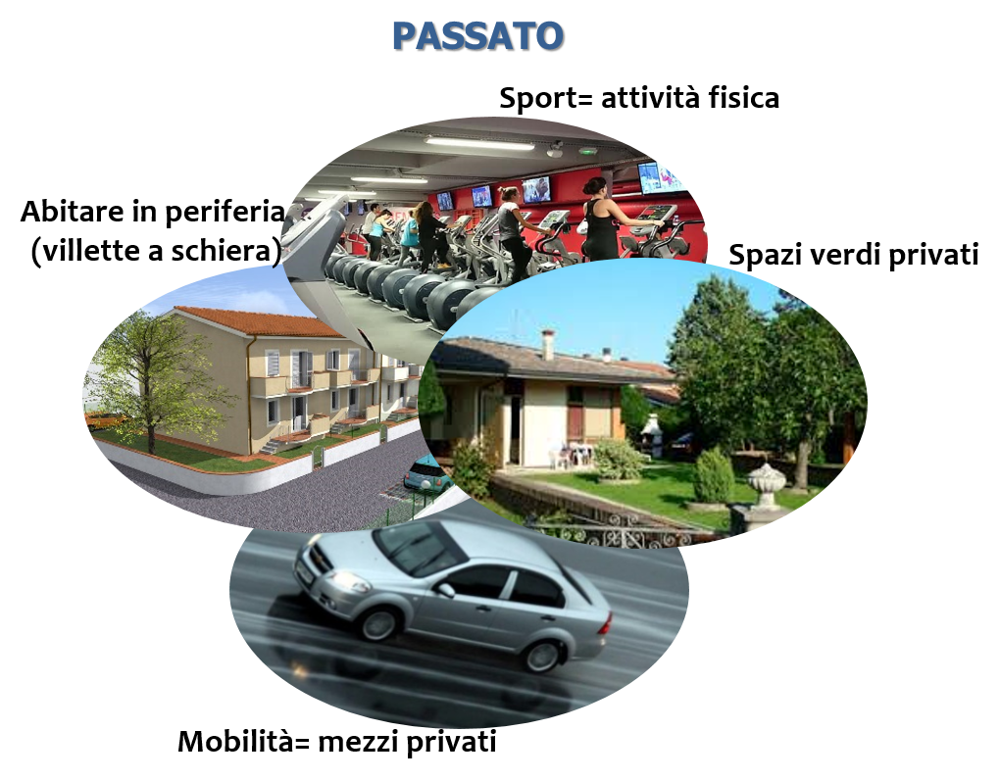
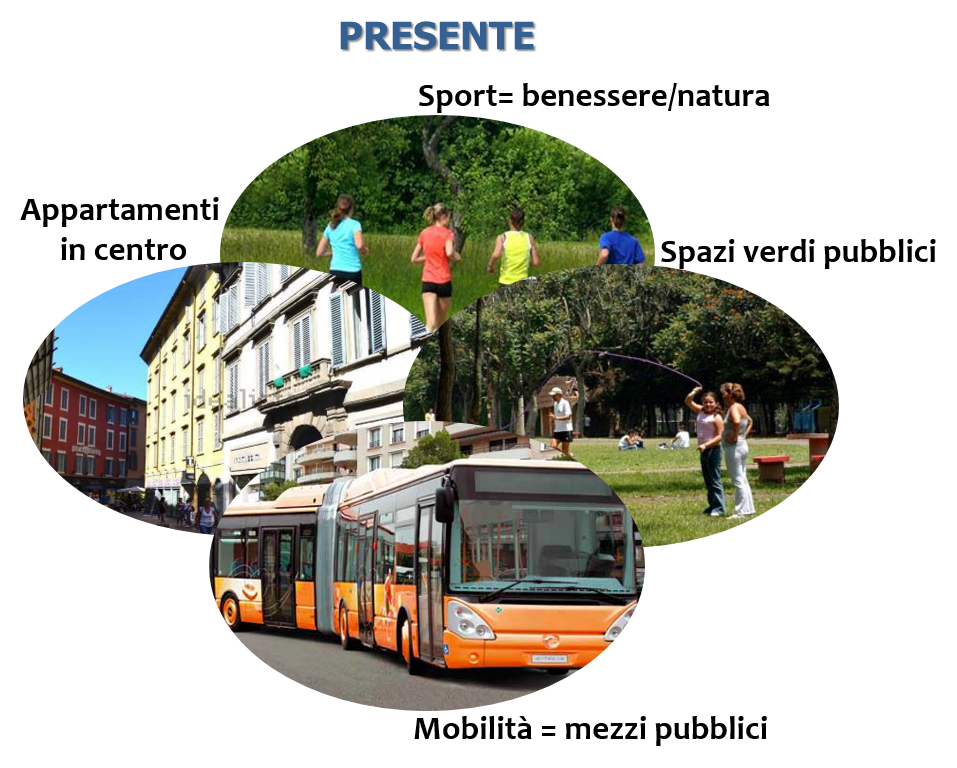
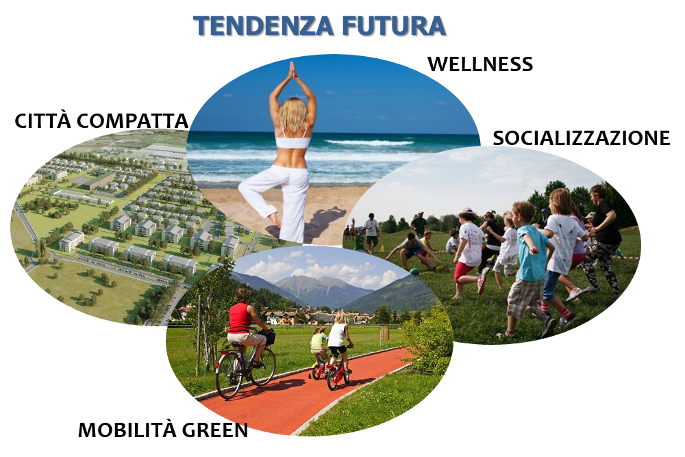

| EVOLUZIONE DELL’ABITARE URBANO | |
   Evoluzione
dell'abitare urbano |
Se consideriamo lo stile di
vita negli ultimi decenni, emerge come fino a qualche anno fa lo sport
fosse valutato esclusivamente come una attività fisica, mentre oggi, viceversa,
è sempre più considerato come un’attività salutare da svolgere a contatto con
la natura, rivolto verso il benessere/wellness. Lo stesso cambiamento di
prospettiva si è verificato a proposito dell’abitare urbano in relazione alla percezione degli spazi verdi.
Negli anni Sessanta dell’ultimo secolo questi ultimi erano considerati prevalentemente
beni privati o, tutt’al più, condominiali. La progettazione riguardava
abitazioni con giardino e successivamente – negli anni Novanta – si verificò il
boom delle "villette a schiera" in interi quartieri periferici. Ben presto ci
si rese conto, però, che tali spazi verdi non ricoprivano alcun ruolo nella
vita quotidiana neppure dei giovani poiché non favorivano la socializzazione. Il
modo prevalente di intendere la vita in città oggi ruota attorno al desiderio
di abitare in quartieri centrali o periferici dotati di collegamenti green che conducano
ad ampi spazi aperti di socializzazione e attività sportiva. In particolare, i parchi di quartiere e i parchi
lineari – aree verdi a sviluppo lineare che spesso seguono il letto di fiumi o
sezioni di antichi tracciati ferroviari o stradali – stanno ricevendo una sempre maggiore attenzione
da parte delle amministrazioni comunali, così come dei cittadini, in quanto
ritenuti luoghi di socializzazione essenziali – come
avvenuto a Bolzano per la passeggiata lungo Talverna, dove, sulle rive
dell’omonimo fiume, si trovano parchi giochi per bambini, campi da calcio e da
pallacanestro, oltre ad essere diventata la location per diversi eventi, tra
cui il mercatino delle pulci o i concerti estivi. Allo stesso tempo, numerose sono le esperienze di
creazione di parchi all’interno di aree dismesse, in diversi casi trasformate
in nuovi “polmoni verdi”, con lo scopo di recuperare i vuoti urbani, come
avvenuto per esempio con il Parco Dora a Torino, ex area a forte
industrializzazione dove attualmente sorge uno degli spazi verdi più estesi
della città, o con il progetto del quartiere le Albere a Trento, dove la
riconversione dell’ex area industriale Michelin ha portato alla costruzione di
residenze eco-sostenibili e del MuSe (Museo delle Scienze di Trento), a cui si
affiancano 28 mila metri quadrati di spazi aperti – viali, piazze e canali – e cinque ettari
di parco. Infine, la tendenza che sta avanzando è quella di preferire lo spostamento in città con i mezzi pubblici, piuttosto che con mezzi privati per una sempre maggiore sensibilità verso l’ambiente e la crescente richiesta di mezzi non inquinanti e di una mobilità green in tutte le sue forme (car sharing, bike sharing, piste ciclabili,…). Appare evidente, dunque, che il Palaghiaccio non può essere concepito esclusivamente come struttura sportiva che riqualifica l’area dismessa ex-Gres – seppure ciò produca il vantaggio di agire sulla riduzione del consumo di suolo – ma piuttosto deve essere considerato il punto focale di un rilancio della periferia sud-occidentale della città, in linea con le nuove esigenze dei cittadini. |